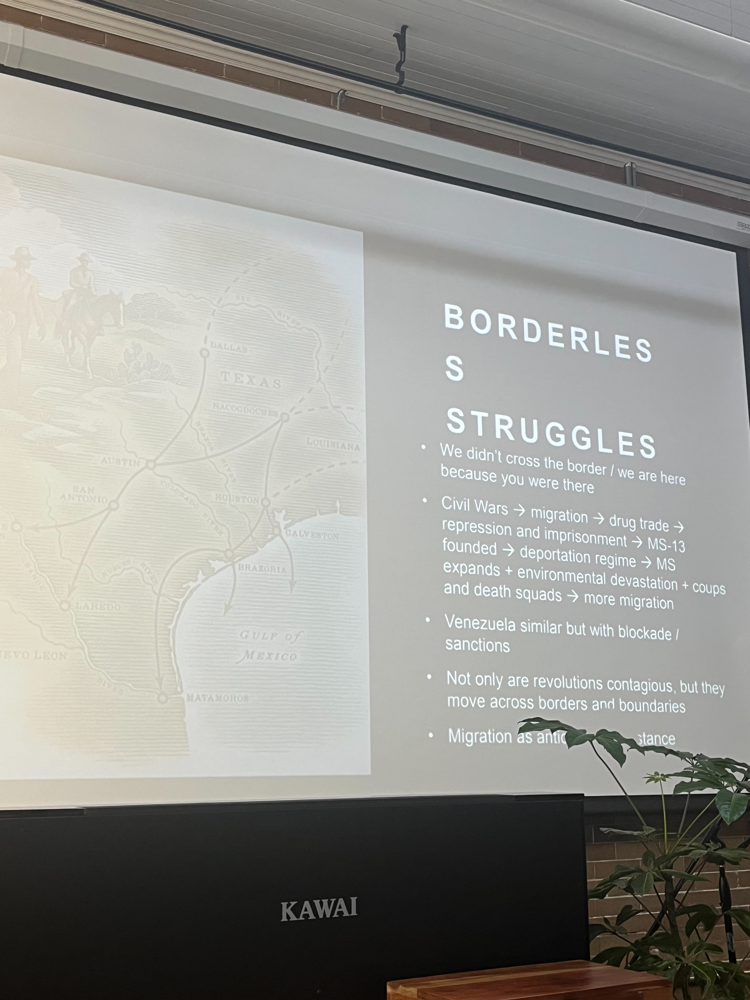

On 10/11, I went to the PEFP teach-in on global solidarity. It was really interesting to be in a space with other educators that are thinking about how to plan lessons in ways that incorporate Gholdy Muhammad’s pursuit of criticality. I hope that the people I met at this event and that are a part of this group of educators will continue to be helpful for me in thinking about how to be an effective teacher in that realm. It is something that I really want to build up as a skill in the classroom.
I attended two of the micro teach ins. One was about Sudan and the other was about Latin America. While both were very informative, I found it difficult to see exactly how I would apply this knowledge to the classroom. I found the conversations I had both formally and informally with the fellow teachers, the most generative. It felt really important to see how other teachers are engaging critically with material and pedagogy. It was also a little demoralizing to hear about all the ways that teachers are not supported in these efforts, or are actively discouraged from doing anything really critical in their practice. However, it was nice to see that teachers are really invested in pursuing social justice in their classrooms and schools.
The teach-in had a lot of unstructured time in the second half of the day and as I was reflecting during that, I was reminded of one of the main reasons I am interested in pursuing a lifetime career as a teacher. I want to do this work because I really care about incorporating social justice and student power into the classroom. I think a big part of that work is being in community with other educators who are dedicated to the work and a constant effort to keep learning and unlearning.
One of the core tenets of my coop teacher’s teaching style is that the work of history is about historical inquiry. The focus of this, and I tell my students this often, is to build the skills of the discipline of history. I feel as though many history teachers often don’t think of themselves as doing actual discipline work. That does a disservice to the discipline and to students who could really benefit from thinking about history and historical inquiry like a skill. As Muhammad talks about, skills are an important part of building a culturally and historically responsive pedagogical practice. Skills should be designed to be applicable to other content areas. Historical synthesis does that. It asks students to think about making an argument and how you can take arguments that you’ve identified, assess them for reliability, and incorporate them into that argument. I would argue that historical synthesis also incorporates more of the other pursuits: intellectualism and criticality. However, the way that it is assessed really makes it a skill.
The first project that students were asked to do was the Origin Story Project. The project asked students to think about their own origin story after learning about origin stories across the world. This project asked them to think about their own lives and how they got to central and what they bring to the school and their origin story of their own life. I think that this is such a genius idea by Sophie because it ties in the historical content while also giving students a lot of time to think about what makes them, them. I think that this definitely could include even more of a critical lens on identity, but I think the project as it is is really wonderful. It was such a delight to get to know students more through their origin story map and reflection. I was able to ask students more about themselves and have a lot more context for when I was interacting with them.